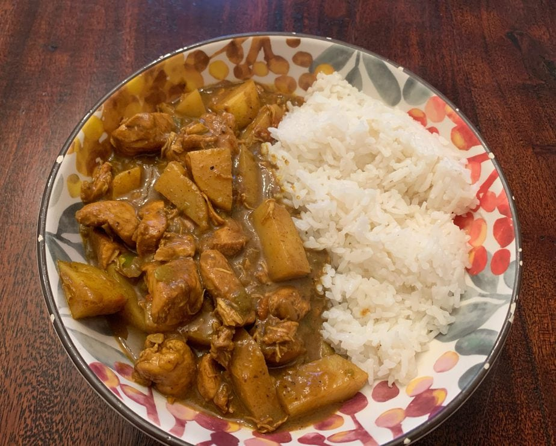

Curry Chicken

Description
This authentic and traditional Jamaican Curry Chicken Recipe is the
perfect combination of rich flavors in one plate. This is the Caribbean
dish to make when you want a taste of the islands.
Ingredients
-
2 lbs boneless and skinless chicken thighs chopped into 2-inch pieces
- 2.5 Tablespoon curry powder separated
- 1 teaspoon all-purpose seasoning
- 1 yellow onion chopped
- 3 green onions chopped
- ½ green pepper chopped
- 4 garlic cloves chopped
- 1 scotch bonner pepper chopped, seeds removed (optional)
- 3 sprigs fresh thyme stems removed
- 3 Tablespoon olive oil
- ¼ cup water
- 1 large russet potato chopped
- Salt and pepper to taste
Directions
-
Add chicken thighs, all-purpose seasoning, 1 Tbsp of curry powder,
onion, green onions, green pepper, garlic cloves, scotch bonnet pepper
(if using), and thyme to a large bowl and combine, making sure all
chicken pieces are covered with the seasoning. Cover and refrigerate for
at least 1 hour or up to overnight.
-
Once the chicken is done marinating, remove onions, peppers, and garlic
cloves from chicken and set aside.
-
Heat olive oil in a large heavy bottom pot over medium heat. Add
remaining curry powder and stir, cooking for about 20-30 seconds. Add
onions, green pepper, garlic cloves, thyme, and scotch bonnet pepper (if
using) to pot and stir until onions have softened, about 3-5 minutes. If
your onions and peppers are looking dry, add about 1 Tbsp of water.
-
Add chicken and ¼ cup of water to the pot. Cover and reduce heat to
medium low. Cook, stirring occasionally, for 30-35 minutes.
-
When there is about 15 minutes remaining, stir in potato and continue to
cook covered.
-
Once chicken is cooked and potatoes are softened, remove from heat. Salt
and pepper to taste.